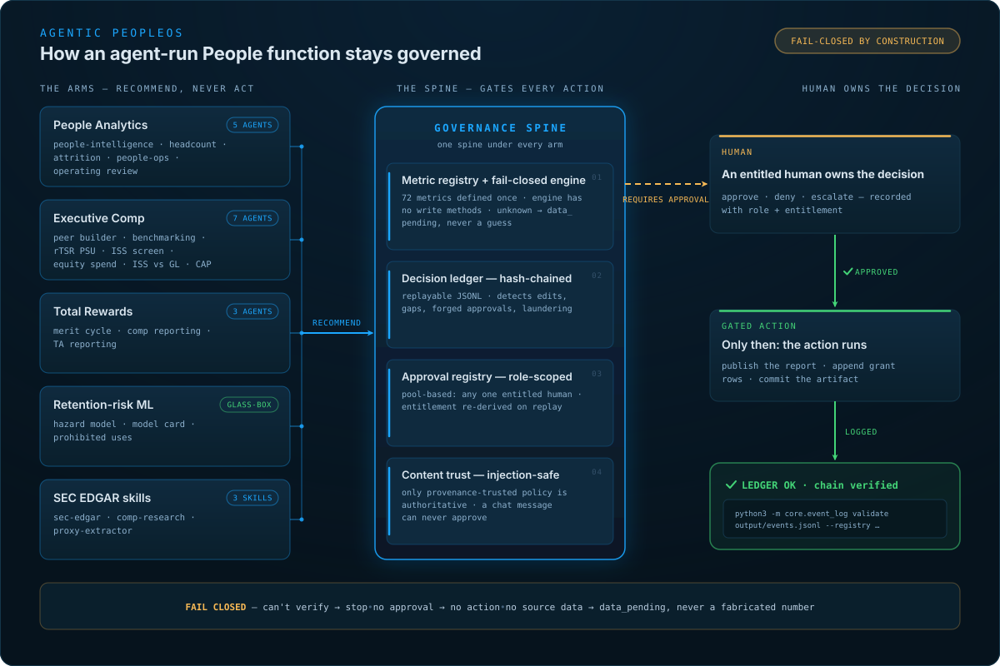
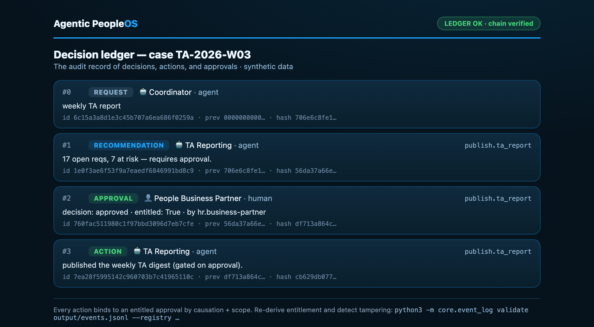

A working reference system · Synthetic data · Real controls
Agentic PeopleOS is the operating system for an agent-run People function — fifteen reference agents across analytics, executive compensation, total rewards, and retention-risk ML, all built on one governance spine: a hash-chained decision ledger, role-scoped human approvals, injection-safe content, and a fail-closed engine. The agents are the easy part. The spine is the point.
request → recommendation → human ✓ → gated publish, every step a hash-chained row.
The operating system
Every arm produces recommendations, never actions. Everything routes through the spine; nothing consequential runs until an entitled human approves — and the ledger can prove, later, that it really happened that way.

The differentiator
"Governed" is asserted on every AI-for-HR slide. Here it's demonstrated: each control below is working code in this repo, with an eval that attacks it and a ledger you can re-verify yourself.
Hash-chained decision ledger
An append-only, replayable JSONL record of every request, recommendation, approval, and action.
Prevents
History editing, forged or out-of-order approvals, and decision laundering — an action with no genuine approval behind it.
core/event_log.pyRole-scoped approval registry
Approval satisfied by a pool: any one entitled HR human; entitlement is re-derived on replay, never trusted from the log.
Prevents
A bot, an imposter, or a non-entitled colleague "approving" — and the opposite failure, one person's PTO blocking every decision.
core/approval_registry.pyInjection-safe content
Only provenance-trusted policy is authoritative.
Prevents
A pasted note or channel message smuggling in an instruction or an "approval." A chat message can never approve anything.
core/content.pyFail-closed compute
One shared engine does all metric math; it has no method that could change a salary, rating, or record, and returns data_pending when a source isn't modeled.
Prevents
Fabricated numbers and quiet write-access. An agent that can't verify the world is safe stops rather than acting blind.
foundation/compute/engine.pyHuman gate by construction
Agents recommend; the gated action cannot execute before an entitled human's recorded approval.
Prevents
Any consequential action without a named human owner. Not a policy — a control flow.
examples/visible-handoff/run.py
the actual ledger render: request → recommendation → human approval → gated action, chain verified.
The eval suite forges an approval, replays a bot as a human, duplicates a reaction, injects instructions through content, and tampers with a ledger row — all five are caught.
python3 examples/visible-handoff/run.py
python3 examples/visible-handoff/evals/test_handoff.py
python3 -m core.event_log validate examples/visible-handoff/output/events.jsonl \
--registry examples/visible-handoff/approval_registry.json
The arms
Every dashboard below is rendered by this repo — one deterministic SVG toolkit, one compute engine, synthetic Acme Corp data (the exec-comp peer universe and proxy pay are real, SEC-disclosed public figures). Note the badge in every top-right corner: nothing here publishes itself.
The one page a CEO actually reads: Revenue per FTE against the SaaS market, the headcount bridge, operating leverage, pay positioning, attrition hotspots, org shape, and the 9-box — every number computed once in the shared engine and cited to the metric registry. Top-right corner: DRAFT · AWAITING PUBLISH APPROVAL. It stays a draft until a human owns it.
Two proxy-advisor reconstructions scoring the same pay — and disagreeing. Glass Lewis's five-test scorecard reads Low; ISS's TSR-centric lens reads Medium: an ISS-only flag. The two-pole counterfactual (pay-vs-TSR-only ≈ Severe, financials-only ≈ Negligible) shows exactly why the lenses diverge — the read a comp committee needs before the vote.
The board deliverable a VP of Total Rewards owns every quarter: SBC as a share of revenue, value-adjusted burn against the industry cap, overhang, pool longevity — the pool funds ~2.8 more years — and where the equity actually goes, executives through broad-based staff.
The annual cycle, rendered: a merit budget allocated through a performance × compa-ratio matrix, the bonus pool, promotions, and equity refreshers. The loop closes: refreshers are emitted as append-valid rows in the equity ledger's schema, so next quarter's board burn already carries this cycle's grants.
A segment-first hazard model that performs its own trustworthiness: model-vs-observed disagreement plotted in red (never averaged away), every metric printed beside its no-skill baseline, three planted decoy features ranked #15/#17/#23 as a leakage tripwire, and fairness shipped as a visibly unchecked checklist. Governance-first — the model card sets the prohibited uses (never an input to termination or individual pay) before the dashboard renders. No individual score is ever surfaced or published.
…and ten more: headcount · attrition · people-ops · operating review · peer builder · benchmarking · rTSR PSU · ISS pay screen · TA reporting · comp reporting — all rendered, all in examples/ ↗
python3 examples/visible-handoff/run.py
python3 examples/visible-handoff/evals/test_handoff.py
python3 -m core.event_log validate examples/visible-handoff/output/events.jsonl \
--registry examples/visible-handoff/approval_registry.json
Python 3, standard library. No API keys, no vendors, no telemetry.
Who builds this
The person behind it runs Total Rewards, and has lived in the problems these dashboards model — executive compensation, equity and burn, the merit cycle, and the proxy-advisor lens a committee has to anticipate. It's a reference system on synthetic data; nothing is drawn from any employer's data, systems, or process.
The same operating discipline runs a 30+ agent autonomous fleet in the background. This repo is the sanitized skeleton of what keeps that safe: every agent with a role, a budget, and an audit trail, and a human owning every consequential call.
The point is narrow: "governed" is something you can show — in code, in evals, in a ledger you can re-verify — not assert on a slide. Nothing here is for sale and nobody's looking for anything; say hi → github.com/skrodzkai if you're working on the same problem.